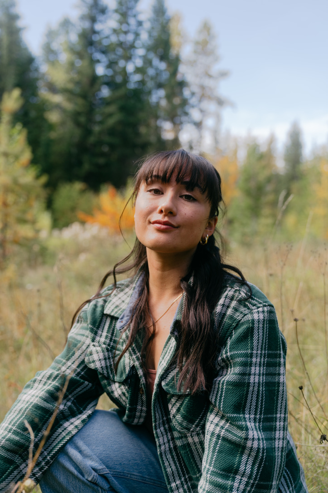

Growing up in Golden, BC, I have been surrounded by wild landscapes my whole life. I fell in love with mountain sports in high school, and that's when I picked up my first camera and began documenting my time spent outdoors. My introduction to the professional world came through second-shooting wedding films, which led me to think about building a career around this passion.
After graduation, I moved to Kelowna to complete a degree in Business Management and then traveled through New Zealand and Europe. I have since moved back to my hometown to focus on building community and a career.
Throughout it all , my love for the outdoors and mountain sports has stayed with me. My favourite projects are when I am able to blend my love for photo and video with the outdoors and sports.
Today, I continue to work and grow in this incredible community of clients I have had the pleasure of working with and have been documenting families, sports, businesses, local tourism, weddings, and events.
I look forward to all that is to come.